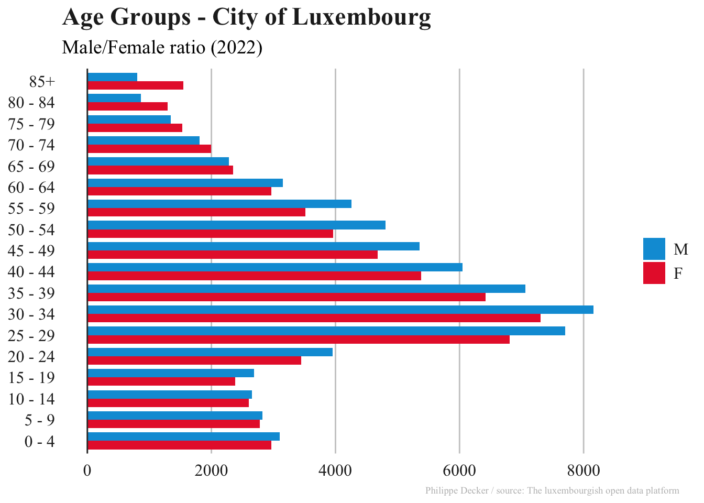
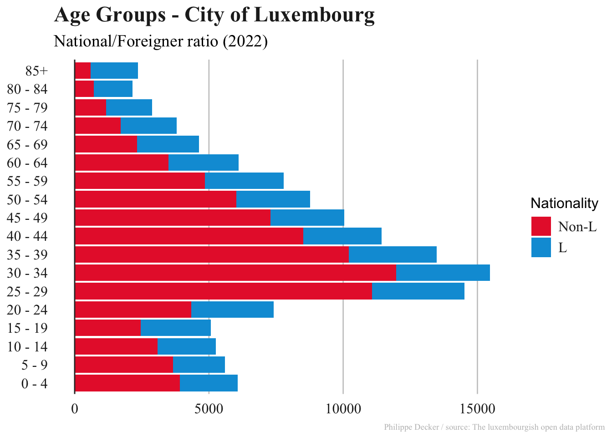

library(readr)
library(tidyverse)popLU_22 <- read_csv2("input/pop_vdl_2022.csv", locale = locale(encoding = "Windows-1252")) # read_csv2() assumes the delimiter is a ; #renaming the column names
popLU_22_rename <- popLU_22 %>% rename(nat = `Nationalité(s)`,
age = Age,
sex = Sexe,
district = Quartier)For the age pyramid, I define the age groups
pop_agegroup <- popLU_22_rename %>%
mutate(age_groups = cut(age,
breaks = c(-Inf, 4, 9, 14, 19, 24, 29, 34, 39, 44,
49, 54, 59, 64, 69, 74, 79, 84, Inf),
labels = c("0 - 4", "5 - 9", "10 - 14", "15 - 19", "20 - 24",
"25 - 29", "30 - 34", "35 - 39", "40 - 44",
"45 - 49", "50 - 54", "55 - 59", "60 - 64",
"65 - 69", "70 - 74", "75 - 79", "80 - 84", "85+"),
right = TRUE)) # Includes the upper bound in each grouppop_summary_sex <- pop_agegroup %>%
group_by(age_groups, sex) %>%
summarise(count = n(), .groups = "drop") #.groups = "drop" → Removes all grouping, so the resulting dataframe is ungroupedBefore plotting, I load my theme (work in progress)
Click to expand code
library(scales)
my_style <- function() { #The first line gives the function a name and indicates that what follows is, in fact, a function definition
font <- "Times New Roman" #The code defines a variable called font and assigns it the respective font. This allows later sections to simply use font rather than repeating the font's name multiple times.
ggplot2::theme(
plot.title = ggplot2::element_text(
family = font,
size = 18,
face = "bold",
color = "#222222"
),
plot.subtitle = ggplot2::element_text(
family = font,
size = 14,
margin = ggplot2::margin(2, 0, 8, 0) #specifies spacing between the title and subtitle with the margin() function, specifying the value in points for the top (2), right (0), bottom (8), and left (0) sides
),
plot.caption = ggplot2::element_text(
family=font,
size=7,
color="gray"
#hjust = -1,
#vjust = 1
),
legend.position = "right",
legend.text.align = 0,
legend.background = element_blank(), #This code removes the legend background (which would show up only if the background color of the entire plot weren’t white)
legend.title = element_blank(), #Removes the title, and the legend key (the borders on the boxes)
legend.key = element_blank(),
legend.text = element_text(
family = font,
size = 12,
color = "#222222"
),
axis.title = ggplot2::element_blank(),
axis.text = ggplot2::element_text(
family = font,
size = 12,
color = "#222222"
),
axis.text.x = ggplot2::element_text(margin = ggplot2::margin(5)),
axis.ticks = ggplot2::element_blank(),
axis.line = ggplot2::element_blank(),
panel.grid.minor = ggplot2::element_blank(),
panel.grid.major.y = ggplot2::element_blank(),
panel.grid.major.x = ggplot2::element_line(color = "#cbcbcb"), #or reverse x/y axis code
panel.background = ggplot2::element_blank()
)
}Plotting the age groups divided by sex
ggplot(pop_summary_sex, aes(x = age_groups, y = count, fill = sex)) +
geom_bar(stat = "identity", position = "dodge", width = 0.8) + # position "dodge" ensure bars are side by side, with the width parameter you can make the bars narrower or wider. A value of 1 means the bars will touch each other, while a value less than 1 creates space between them.
coord_flip() + # Flip to make it horizontal
scale_y_continuous(labels = abs) + # Show absolute values on y-axis
scale_fill_manual(values = c("M" = "#049DD9", "F" = "#E82736")) +
labs(title = "Age Groups - City of Luxembourg",
subtitle = "Male/Female ratio (2022)",
x = "",
y = "",
caption = "Philippe Decker / source: The luxembourgish open data platform") +
theme(plot.caption = element_text(hjust = 1.2, vjust = 1)) +
geom_hline(yintercept = 0, size = 0.5, colour = "#333333") +
my_style()+
guides(fill = guide_legend(reverse = TRUE)) #reverses the legend variables
pop_summary_nat <- pop_agegroup %>%
mutate(nationality = ifelse(grepl("L", nat), "L", "Non-L")) %>% #nationality = ifelse(...) creates a new column named nationality based on a condition. grepl("L", nat) checks each element in the nat column to see if it contains the letter "L". It returns TRUE if "L" is found and FALSE otherwise. When TRUE, it assigns the value "L", when FALSE it assigns the value "Non-L".
group_by(age_groups, nationality) %>%
summarise(count = n(), .groups = "drop") #.groups = "drop" → Removes all grouping, so the resulting dataframe is ungroupedPlot the age pyramid divided by nationality L/Non-L
ggplot(pop_summary_nat, aes(x = age_groups, y = count, fill = nationality)) +
geom_bar(stat = "identity", position = "stack") +
coord_flip() +
scale_y_continuous(labels = abs) + # Show absolute values on y-axis
scale_fill_manual(values = c("L" = "#049DD9", "Non-L" = "#E82736"), name = "Nationality") + # Set custom legend title here +
labs(title = "Age Groups - City of Luxembourg",
subtitle = "National/Foreigner ratio (2022)",
x = "",
y = "",
caption = "Philippe Decker / source: The luxembourgish open data platform") +
theme(plot.caption = element_text(hjust = 1.4, vjust = 0.5)) +
geom_hline(yintercept = 0, size = 0.5, colour = "#333333") +
my_style()+
guides(fill = guide_legend(reverse = TRUE))+
theme(
legend.title = element_text(size = 12, color = "black"), # Customize legend title style
legend.text = element_text(size = 12) # Customize legend text style
)